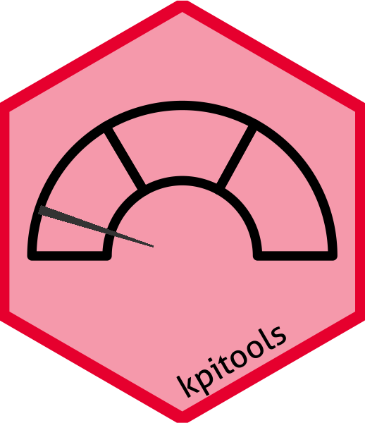
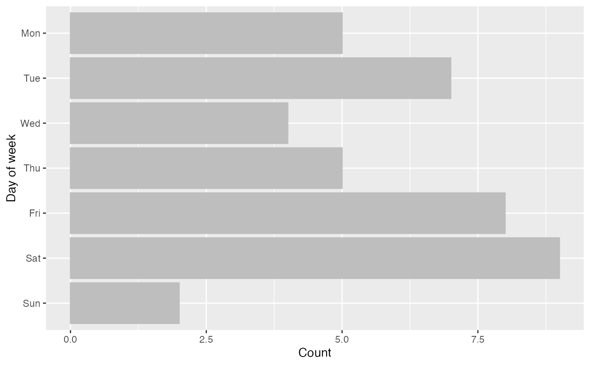
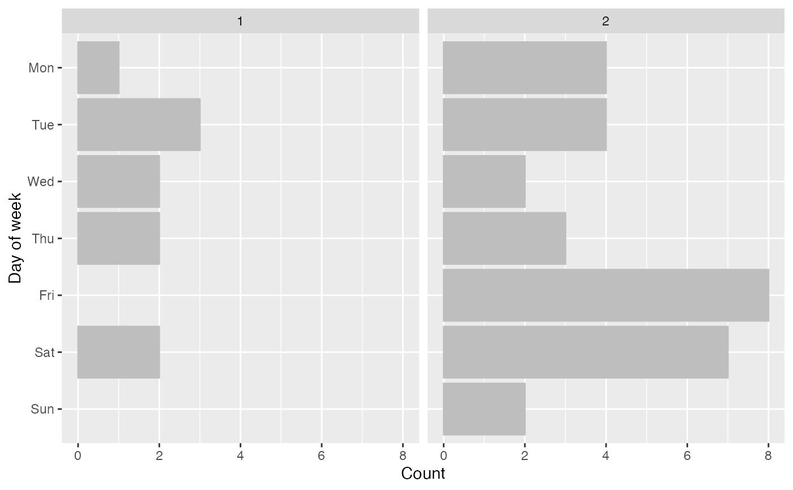
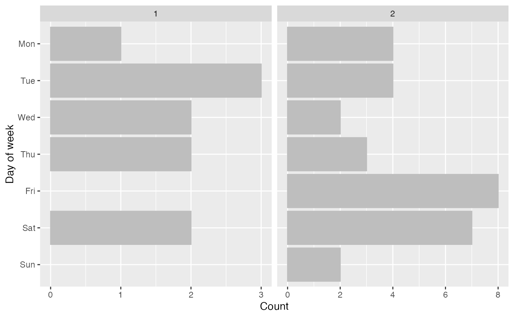
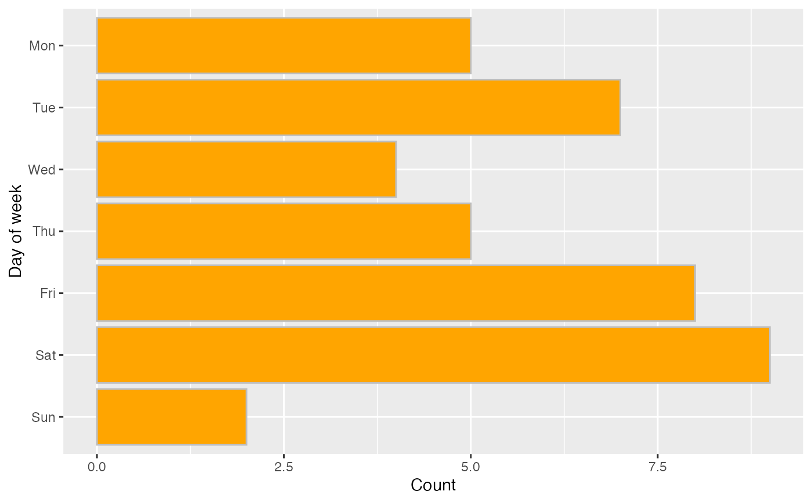
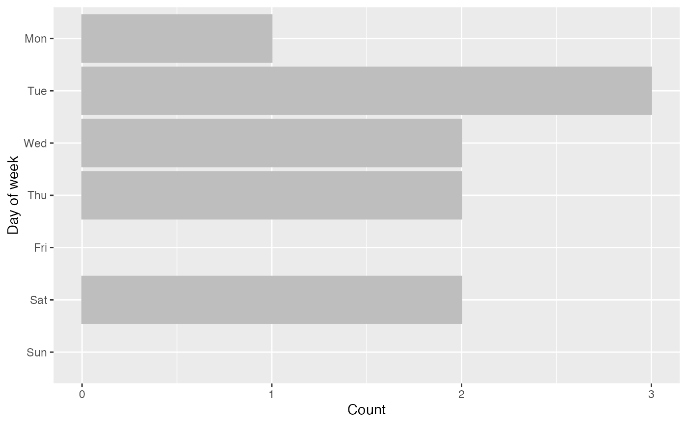
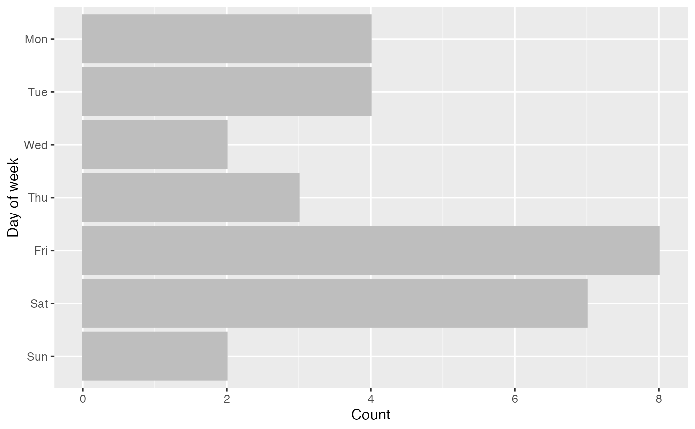
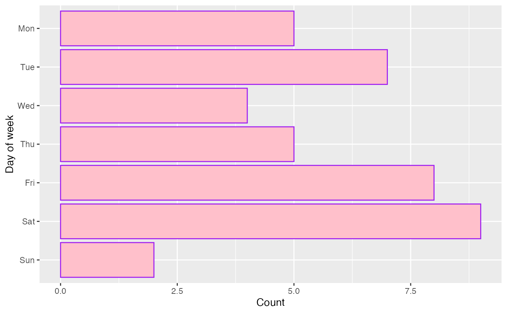

Day of week figure(s)
fab_dow.RdIn a normal setting it may be that observations that occur at the weekend are
indicative of data fabrication. fab_dow (short for fabrication, day of
week), produces a plot that may help to identify problems. Customs vary in
different countries, so that should be accounted for when interpreting these
figures.
Usage
fab_dow(
data,
var,
by = NULL,
dow_fmt = "%a",
output = c("facet", "list"),
col = "grey",
fill = "grey",
...
)Arguments
- data
cdata frame containing
var(and, optionally,by) variable(s)- var
string. Name of variable containing relevant dates or datetimes (will be coerced to date via
as.Date)- by
string. Name of variable denoting grouping
- dow_fmt
format for day of week
- output
output format
facetcombines figures via ggplot2::facet_wrap,listreturns a list of ggplot2 plots- col
colour to use for bar lines
- fill
colour to use for bar fill
- ...
options passed to facet_wrap (see examples)
Examples
set.seed(234)
dat <- data.frame(
x = Sys.Date() + sample(-20:19, 40, TRUE),
by = c(rep(1, 10), rep(2, 30))
)
dat %>% fab_dow("x")

dat %>% fab_dow("x", "by")

# free x scale
dat %>% fab_dow("x", "by", scales = "free_x")

# different colour bars
dat %>% fab_dow("x", fill = "orange")

# list of plots
dat %>% fab_dow("x", "by", output = "list")
#> $`1`

#>
#> $`2`

#>
# change colours
dat %>% fab_dow("x", col = "purple", fill = "pink")
